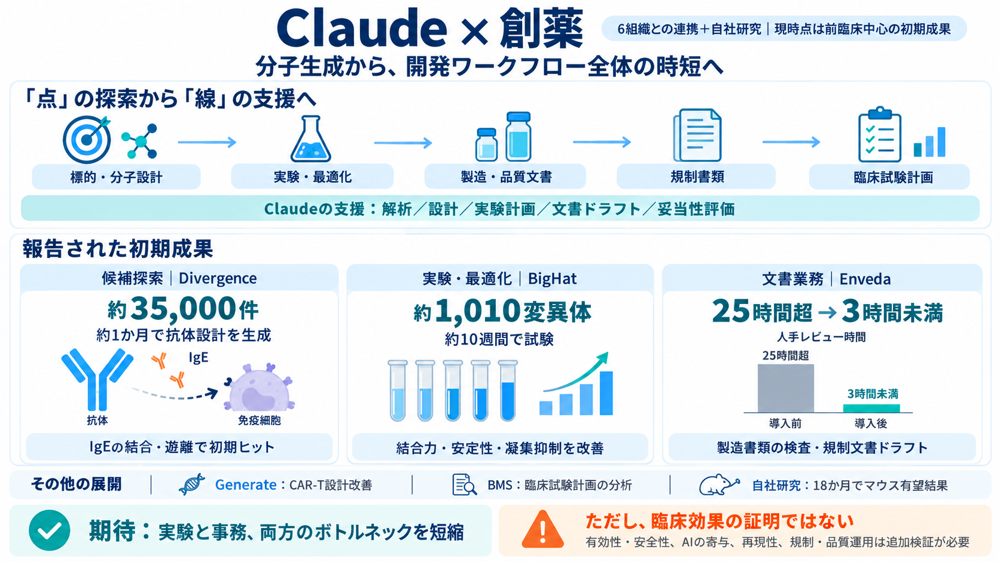

Anthropic Drug Development: 35,000 Designs, 89% Faster | explainx.ai Blog | explainx.ai
Anthropic says Claude is now doing real work inside six drug-development programs, and that it has started its own. In a…

ターゲット/モダリティ設計、ヒット探索
リード最適化、実験計画と評価
製造・規制書類、臨床試験計画の妥当性
約35,000件 / 約1か月で生成 → 早期試験のヒット獲得
約1,010変異体 / 約10週間 → 結合力・安定性・凝集抑制の指標改善
固形がん向けに設計要素を最適化（短縮）
受容体数↑、殺傷効率↑
二腕構造（二つの作用点）
免疫細胞からIgEを切り離す
結合・遊離でヒット
25時間超 → 3時間未満（レビュー）
規制適合の最終判断は当局審査で確認が必要
臨床試験計画の分析・成功確率推定
筋ジストロフィー：18か月でマウス有望結果
時間・費用の低減
高リスク案へ投資しやすく
Claude活用の企業設立
解析／設計／計画／文書ドラフト／妥当性評価
ボトルネックの短縮、候補探索の加速
有効性・安全性は未検証
寄与割合の切り分けが難しい
監査・責任分界・品質保証の詳細不足
統制条件、統計的検証、長期の再現性
規制当局が要求する品質基準の適合検証
Anthropic says Claude is now doing real work inside six drug-development programs, and that it has started its own. In a…
The results emerged from a collaboration with Divergence Labs, one of six drug development organizations working with An…
1.7.2026 BigHat Biosciences Partners with Lilly to Advance Machine Learning–Enabled Biologics Discovery Through Lilly T…
1.7.2026 BigHat Biosciences Partners with Lilly to Advance Machine Learning–Enabled Biologics Discovery Through Lilly T…
1.7.2026 BigHat Biosciences Partners with Lilly to Advance Machine Learning–Enabled Biologics Discovery Through Lilly T…